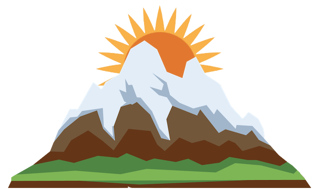
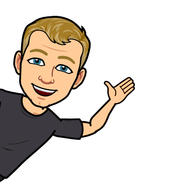
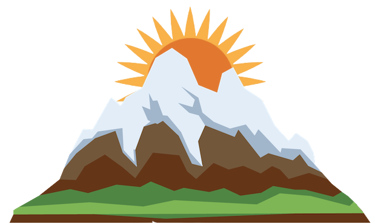
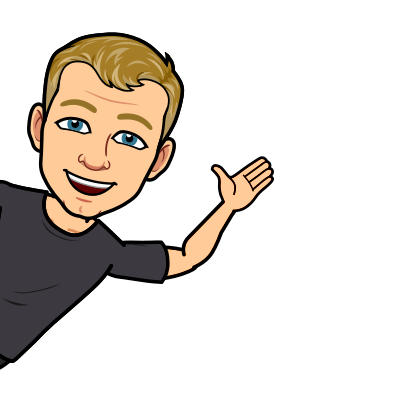
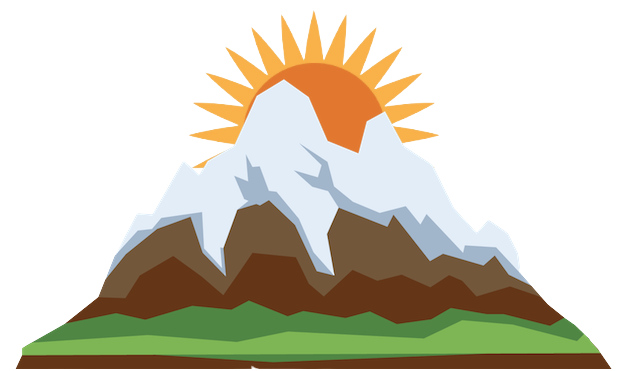
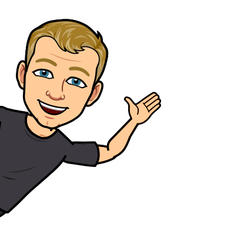

I'm Thomas!
A Programmer and Computer Science Major!




 



My name is Thomas Deverin, and I am a computer science major at New River Community College. I am also currently working as an intern at Federal-Mogul (Tenneco) developing company software. I will graduate with an Associate's Degree in May and continue my education to earn a Bachelor's.
I am currently studying at New River Community College as a Computer Science Major. I am in my second year and will graduate with an Associates Degree in May before transferring to a four year institution to earn my Bachelor's Degree. I am also a member of Phi Theta Kappa, and I have a 4.0 GPA!
I earned my Advanced Studies Diploma from Blacksburg High School in May 2019. I was a member of Mu Alpha Theta and took many Advanced Placement classes. I earned a 5 on the AP Computer Science A exam and graduated with a 3.91 GPA.
I am currently working as an intern at an automotive manufacturing company called Federal-Mogul which is owned by Tenneco. I began interning at the beginning of January 2021 and plan to stay through at least the summer before possibly heading off to continue my education elsewhere. I am responsible for developing programs using a development environment called LabVIEW. The current application I'm programming is meant to read hundreds of thousands of data entries of manufactured bearings and give a comprehensive review of how many passed inspection and how many were scrapped.

I began programming my senior year of high school. I earned a 5 on the AP Computer science A exam and decided to major in computer science. Since then, I am self taught in C++, Python, Swift, HTML, and CSS. In fact, I learned HTML and CSS for the purpose of making this site!

I have excelled in mathematics throughout both high school and college. I was a member of Mu Alpha Theta in high school and earned a A in Calculus I my senior year. In college I have earned A's in all classes with heavy math including Calculus 3, Linear Algebra, and University Physics.

One of my favorite things about life is the ability to learn and grow! I sincerely believe that continuous learning is vital throughout life. Even outside of school, I take time everyday to learn new skills (most of which is programming)! I mostly use a website called Udemy to learn and have learned almost all the programming languages I know using Udemy. This website you're looking at right now is a product from a Udemy course on web design and my ambition to learn!

I absolutely love to travel and have the opportunity to experience other cultures around the world! Before the pandemic brought everything to a grinding halt, I had traveled to Canada, Belize, and Egypt with plans travel throughout Europe during summer break. I truly believe traveling and experiencing other cultures is the only way to gain a clearer vision of how the world actually works. I can't wait until I'm able to grap my passport and fly off to another country again!
© 2021 Thomas Deverin.